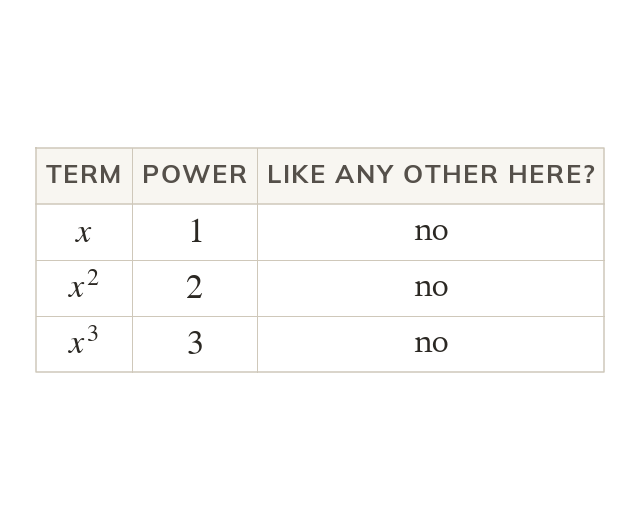

Which terms can even combine
and are different powers of the same letter. They are not like terms: stays as it is.
and are different powers of the same letter, so they are not like terms and cannot be combined, no matter which operation is involved.